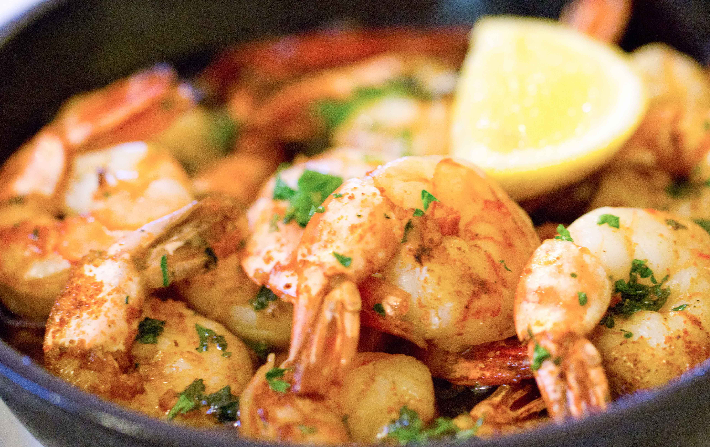
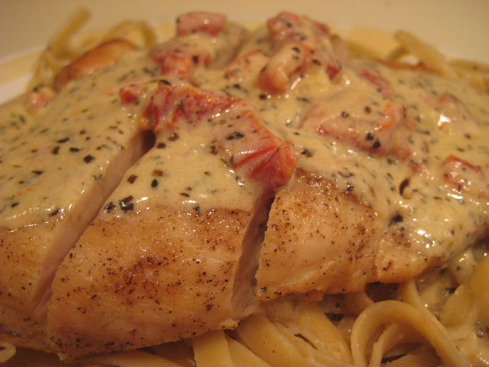
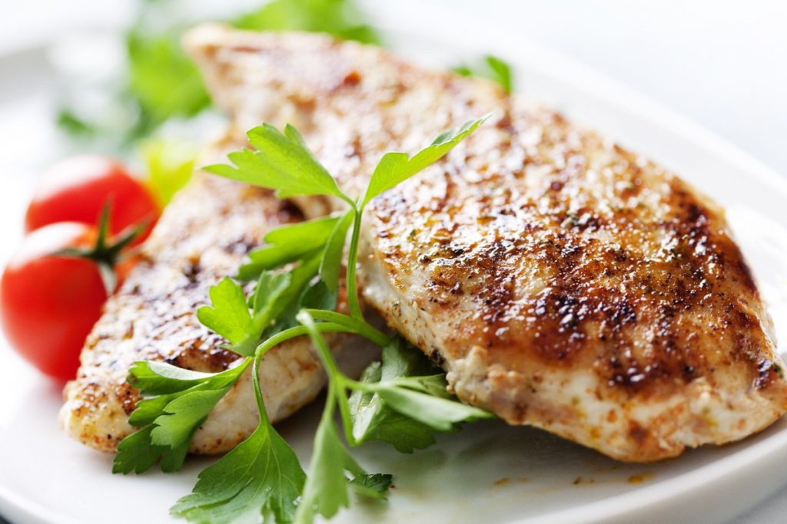
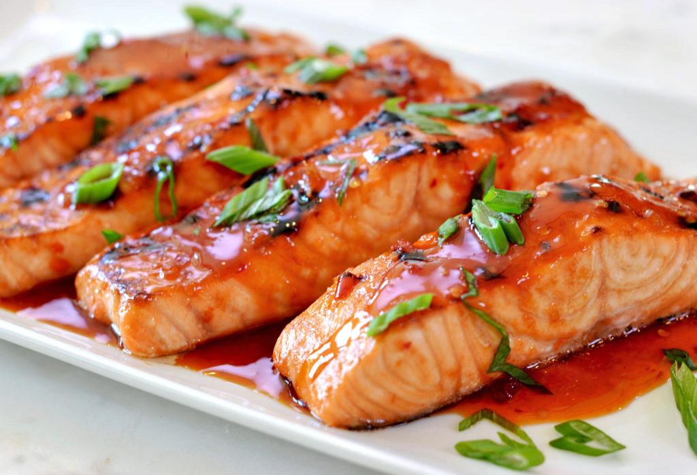
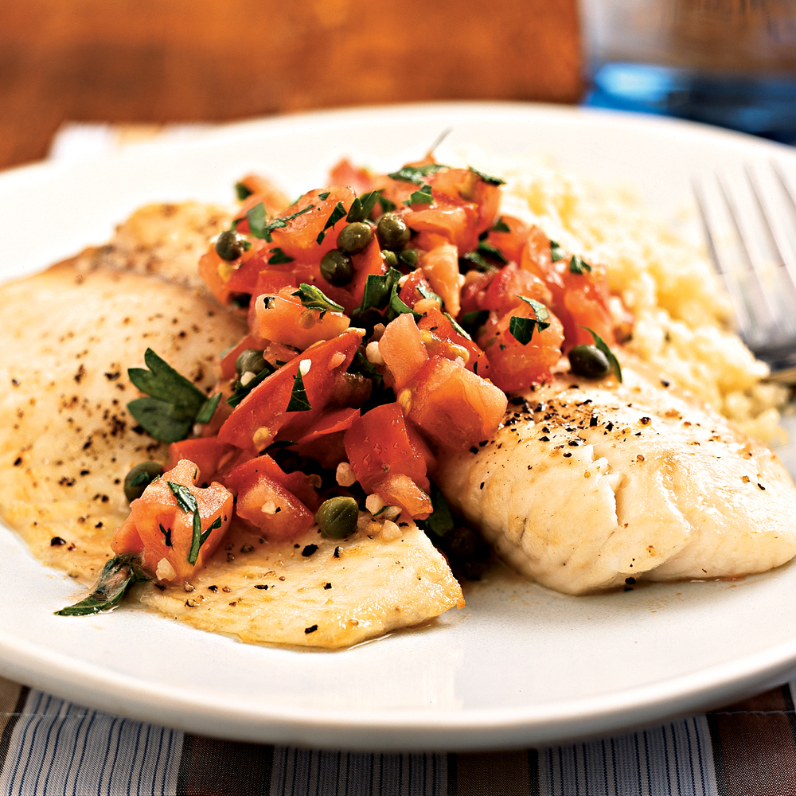

Lazy Chef 30-min Recipes
Cooking has never been so easy yet tasty.
JUST BE LAZY.
LUNCH

Simple Garlic Shrimp
Ready in: 25 min
Ready in: 25 min
- Heat olive oil over high heat until it just begins to smoke. Place shrimp in an even layer on the bottom of the pan and cook for 1 minute without stirring.
- Season shrimp with salt; cook and stir until shrimp begin to turn pink, about 1 minute.Stir in garlic and red pepper flakes; cook and stir 1 minute. Stir in lemon juice, caper brine, 1 1/2 teaspoon cold butter, and half the parsley.
- Cook until butter has melted, about 1 minute, then turn heat to low and stir in 1 1/2 tablespoon cold butter for about 2 to 3 minutes.
- Remove shrimp with a slotted spoon and transfer to a bowl; continue to cook butter sauce for about 2 minutes. Season with salt to taste.

Chicken Milano
Ready in: 30 min
Ready in: 30 min
- In a large saucepan over low heat, melt butter; add garlic and cook for 30 seconds. Add the tomatoes and 3/4 cup of the chicken broth; increase to medium heat and bring to a boil.
- Sprinkle the chicken with salt and pepper on both sides. In a large skillet over medium heat, warm oil and saute chicken. Press on chicken occasionally with a slotted spatula. Cook for about 4 minutes.
- In the same skillet, over medium heat, bring 1/4 cup chicken broth to a boil; stirring the pan juices. Reduce slightly and add to the cream sauce; stir in basil and adjust seasonings to taste.
- Meanwhile, bring a large pot of lightly salted water to a boil. Add fettuccine and cook for 8 to 10 minutes or until al dente; drain, transfer to a bowl and toss with 3 to 4 tablespoons of the sauce.Transfer the pasta to serving plates; top with chicken and coat with the cream sauce; serve.

Spicy Garlic Lime Chicken
Ready in: 25 min
Ready in: 25 min
- In a small bowl, mix together salt, black pepper, cayenne, paprika, 1/4 teaspoon garlic powder, onion powder, thyme and parsley. Sprinkle spice mixture generously on both sides of chicken breasts.
- Heat butter and olive oil in a large heavy skillet over medium heat. Saute chicken until golden brown, about 6 minutes on each side.
- Sprinkle with 2 teaspoons garlic powder and lime juice. Cook 5 minutes, stirring frequently to coat evenly with sauce.

Balsamic-Glazed Salmon Fillets
Ready in: 30 min
Ready in: 30 min
- Preheat oven to 400 degrees F (200 degrees C). Line a baking sheet with aluminum foil, and spray with non-stick cooking spray.
- Coat a small saucepan over medium heat, cook and stir garlic until soft, about 3 minutes. Mix in white wine, honey, balsamic vinegar, mustard, and salt and pepper. Simmer, uncovered, for about 3 minutes.
- Arrange salmon fillets on foil-lined baking sheet. Brush fillets with balsamic glaze, and sprinkle with oregano.
- Bake in preheated oven for 10 to 14 minutes. Brush fillets with remaining glaze, and season with salt and pepper. Use a spatula to transfer fillets to serving platter, leaving the skin behind on the foil.

Parmesan Crusted Tilapia Fillets
Ready in: 20 min
Ready in: 20 min
- Preheat oven to 400 degrees F (200 degrees C). Line a baking sheet with aluminum foil.
- Whisk Parmesan cheese, paprika, parsley, salt, and pepper together in a shallow dish.
- Coat tilapia fillets with olive oil and press into the Parmesan cheese mixture. Arrange coated fillets on the prepared baking sheet.
- Bake in preheated oven until the fish flakes easily with a fork, 10 to 12 minutes.
Pork Medallions with Balsamic Vinegar and Capers
Ready in: 25 min
Ready in: 25 min
- Place the flour, garlic salt, and pepper into a plastic bag. Shake to mix, the add the pork tenderloin pieces, and shake again to coat. Shake off the excess flour.
- Heat the oil in a large skillet over medium-high heat. Cook the pork medallions in the hot oil until golden-brown on both sides, 2 to 3 minutes per side. Pour in the balsamic vinegar and chicken broth. Bring to a boil, then reduce heat to medium, and simmer until the pork is no longer pink in the center, 3 to 4 minutes.
- Remove the pork to a serving platter, then stir the lemon zest and capers into the simmering sauce. Continue simmering until the sauce has thickened to your desired consistency.